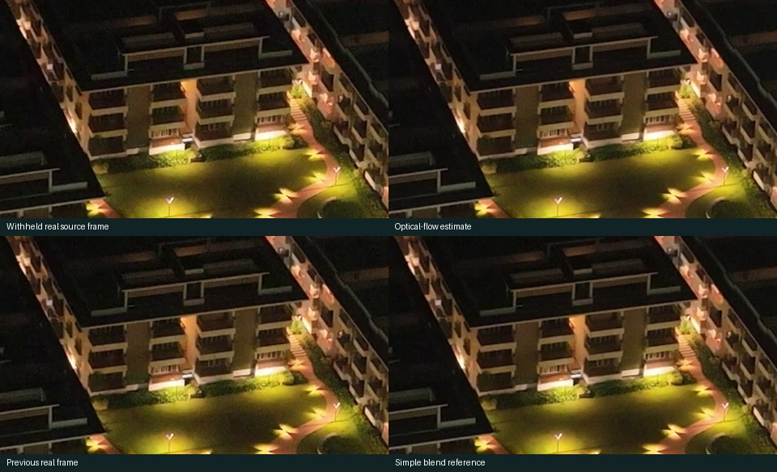
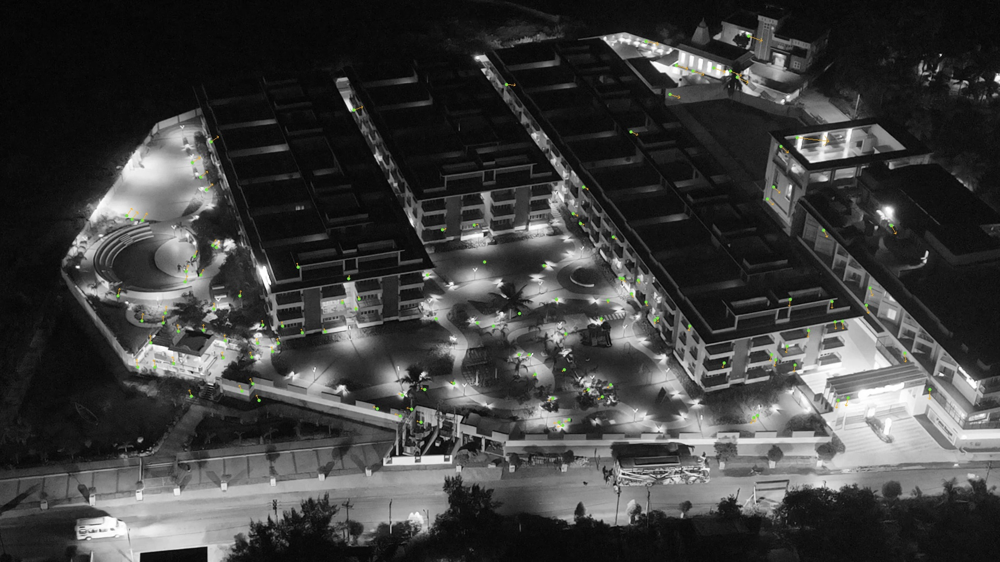
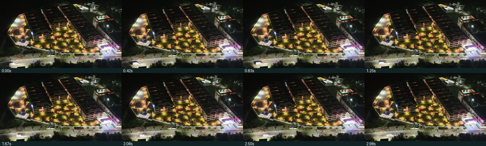

Original timing
The same shot at its recorded 25 FPS. The proof above slows this observed motion; it does not create a closer camera position.
A three-second source-based retiming proof. Compare the real building, inspect the original curtains, and review the camera-reconstruction results.
Loading proof metadata…
The same shot at its recorded 25 FPS. The proof above slows this observed motion; it does not create a closer camera position.
A real frame was withheld, estimated from its neighbors, then compared at the same architectural crop. No sharpening or blur conceals the differences.

Loading measured results…
Sparse points and low image error are evidence about the observed exterior only. They do not establish hidden surfaces, real-world dimensions, the correct balcony identity or the connection to the required bedroom.
Original 17.84–19.28s footage, including the people opening the curtains. Its blue wall and three artworks differ from the required bedroom. This is reference evidence, not a replacement curtain shot.
The existing first suite photograph remains the final reference. The route from the selected exterior window into this exact room is not documented by the supplied clips.

Existing generated aerial and photographic 3D composite, including the synthetic balcony and orange curtains. This file has not been replaced.

